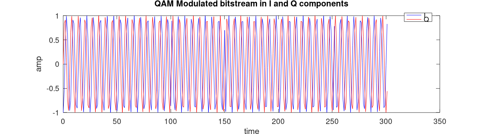
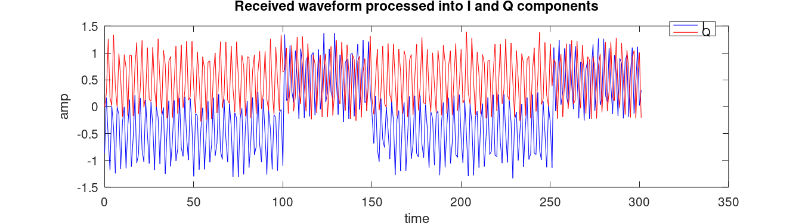

This example begins with a stream of binary bits used to build a waveform in i/q with 4-QAM, adds noise to simulate an RF link, re-establish I/Q from the simulated RF link waveform, filter, and finally demodulate to see what goes on from the beginnings to end of a digital RF system. Particular attention has been made to avoid 'special' functions that 'black box' what is going on in the actual signal processing.
Convolutional maths is probably the most important aspect to understand here , as the convolution part still looks a little black box like. Follow the link below to a great youtube video on convolutions.
SDRForEngineers course material
ShareTechNote - Under Comm.Tech and SDR
% Include some packages (using minimal additions and functions hiding the maths, % of what they're doing) pkg load signal pkg load communications % Number of detection points (QAM is 4, one each quadrant) mlevel = 4; % Sample rate samplerate = 100; % Bit rate bitrate = 2; % Frequency of carrier signal should be higher than the bitrate! (x2-10 is useful) fmod = 4; % Bit length = 2pi * carrier freq bitlen = fmod*2*pi; % Input 'Bitstream' for modulation inbits = [0, 1, 0, 1, 0, 1, 0, 1, 1, 1, 1, 1, 0, 1, 0, 1, 0, 1, 0, 1, 1, 1, 1, 1];
% Some shorter inline equation $e^{ix} = \cos x + i\sin x$. % Transform input bitstream so that 0's are -1 % this will make easier quadrant calculations below by pushing the sin/cos % component out by 90 degrees (phase) if zero, as zero becomes -1, % and if 1, it will stay 1. inbits = (inbits .* 2) .- 1; % Generate I/Q bit patterns for QAM (bit defines quadrant i=x q=y axis. % Split every second bit between si/sq (QAM property) si = inbits(1:2:end); sq = inbits(2:2:end);
disp('si='); disp(si); disp('sq='); disp(sq);
si= -1 -1 -1 -1 1 1 -1 -1 -1 -1 1 1 sq= 1 1 1 1 1 1 1 1 1 1 1 1
% Pad last symbol for algorithm to work in octave/matlab si = [si 0]; sq = [sq 0]; % The number of samples used in this example, go all the way to 2pi*length of bitstream % 1 wavelength is 2pi % 1 bit length is the bitrate ft = 0:1:(2*pi*fmod*(length(si)-1));
Each bit is mapped onto a sin/cos waveform and phase(1/-1) of waveform
Equation for calculating the sin/I/real component 'bit' emphasis on phase
$$iy(t) = \cos(t) * Ibit(\frac{t}{2*pi*fmod})$$
Equation for calculating the cos/Q/imaginary component 'bit' emphasis on phase
$$qy(t) = \sin(t) * Qbit(\frac{t}{2*pi*fmod})$$
iy = cos(ft) .* si(floor(ft/(2*pi*fmod)) +1); qy = sin(ft) .* sq(floor(ft/(2*pi*fmod)) +1);
outwave = iy+qy; % Putting the above equation together we get: % $$w(t) = \cos(t) * Ibit(\frac{t}{2*pi*fmod}) + j * \sin(t) * Qbit(\frac{t}{2*pi*fmod})$$ % Plot the I and Q of the modulation figure(1, "paperposition", [1 1 9 2.5]); plot(ft, iy, "b", ft, qy, "r"); title('QAM Modulated bitstream in I and Q components'); legend('I', 'Q'); xlabel("time"); ylabel("amp");
% Plot the output wave figure(2, "paperposition", [1 2 9 2.5]); plot(ft, outwave ); title('QAM Modulated signal prior to TX'); legend('Waveform'); xlabel("time"); ylabel("amp");
What values of NOISE does QAM work down to, why does QAM have good noise immunity?
inwave = awgn(outwave,20,'measured'); % Plot the "received wave", noise included from above figure(3, "paperposition", [1 3 9 2.5]); plot(ft, inwave); title('Received waveform with simulated noise'); legend('Waveform'); xlabel("time"); ylabel("amp");
in_i = inwave .* cos(ft); in_q = inwave .* sin(ft); % Plot the waveform decomposed back into I and Q figure(4, "paperposition", [1 4 9 2.5]); plot(ft, in_i, "b", ft, in_q, "r"); title('Received waveform processed into I and Q components'); legend('I', 'Q'); xlabel("time"); ylabel("amp");
this is essentially a simple convolution
windowsz = fmod; filteredi = filter(ones(windowsz,1)/windowsz, 1, in_i); filteredq = filter(ones(windowsz,1)/windowsz, 1, in_q); % Averages of I and Q waveforms figure(5, "paperposition", [1 5 9 2.5]); plot(ft, filteredi, "b", ft, filteredq, "r"); title('I and Q low pass filtered'); legend('I', 'Q'); xlabel("time"); ylabel("amp");
% Plot a constellation in 3d with time scale as the Z axis figure(6, "paperposition", [1 6 8 8]); plot3(ft, filteredi, filteredq); view([8,-4,-10]); title('QAM Modulated bitstream in I and Q components'); legend('w'); xlabel("time"); ylabel("I"); zlabel('Q');

We detect approx halfway into each symbol (bit length)
outbits = []; for i = ft(floor(bitlen/2):floor(bitlen):end) if(filteredi(i) > 0) iret = 1; else iret = 0; endif if(filteredq(i) > 0) qret = 1; else qret = 0; endif outbits = [outbits iret qret]; endfor
Output bitstream as received/filtered/demodulated
figure(7, "paperposition", [1 7 8 1.5]); stem(outbits, 'b'); title('Received demodulated bitstream'); xlabel('Symbol index'); ylabel('Value');
Input bitstream as modulated
figure(8, "paperposition", [1 8 8 1.5]); stem(((inbits .+ 1) ./ 2), 'r'); title('Original modulated bitstream'); xlabel('Symbol index'); ylabel('Value');